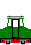
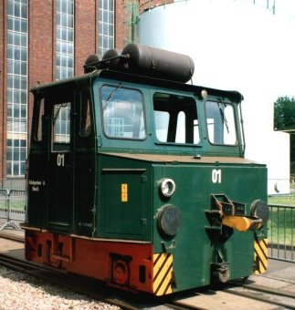
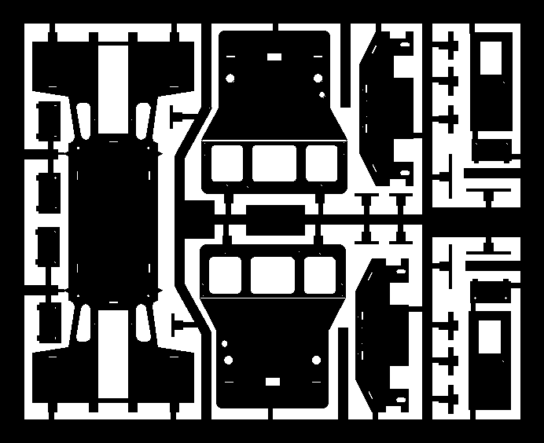
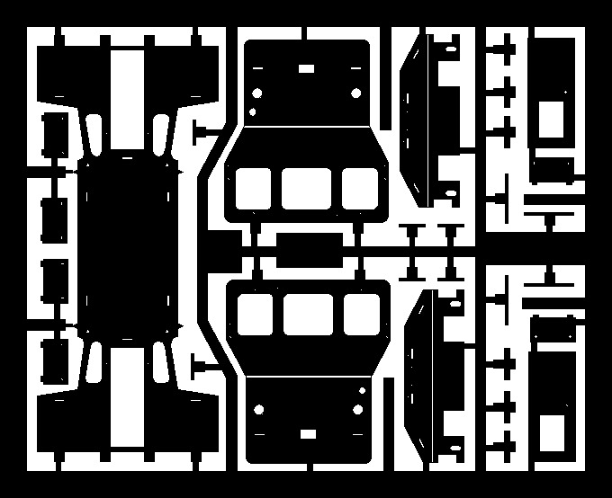
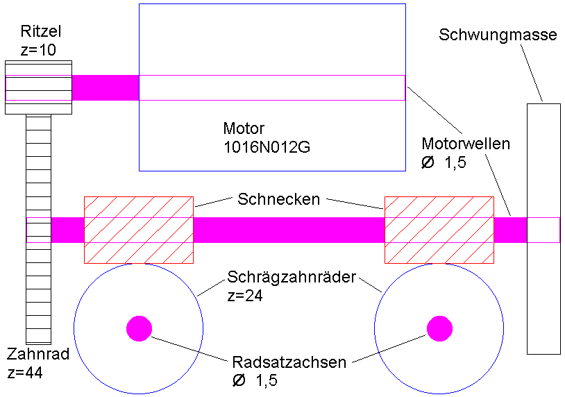
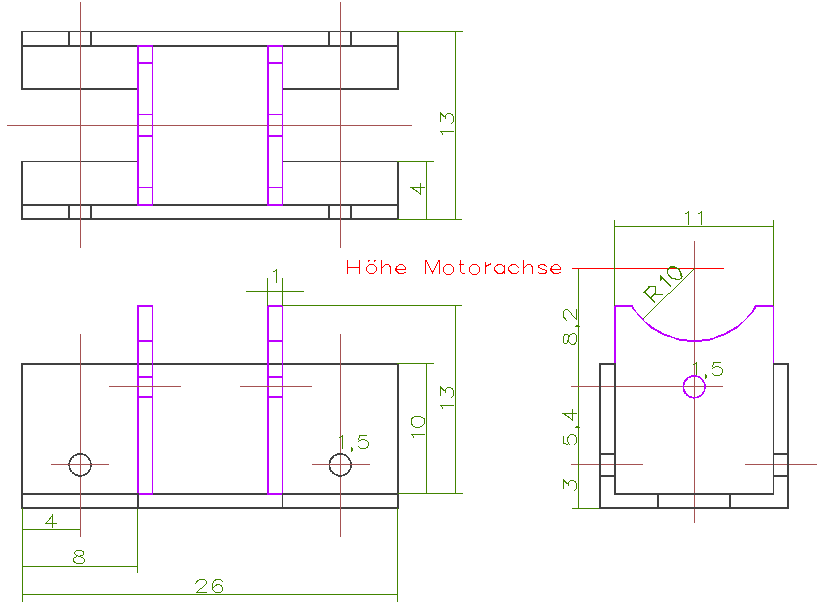

Krümelbahn
Krümelbahn
ASF (Akkuschleppfahrzeug) erschienen in: CMT-Info 1-2016, S.21 bis 24: Selbstbau - ein Versuch wert! ASF 01
ASF 01
ASF 01 im AW Opladen [5-9-93]

Allgemeine Informationen
Auf dieses Fahrzeug aufmerksam geworden bin ich am Tag der offenen Türe im AW Opladen. Es wurden sofort Fotos des Fahrzeugs von allen Seiten gemacht, eine exakte Maßermittlung gestaltete sich jedoch schwierig.Eine Anfrage beim AW Opladen nach einer Typskizze o.ä. (wegen der Maßangaben) blieb erfolglos.
Erfolg brachte hingegen das Buch "K.D.Holzborn: Bahnbetriebswerke in Deutschland (Motorbuch Verlag Stuttgart 1994)" hier war das ASF109 des Bw Saalfeld abgebildet. Ein Schreiben an das Bw Saalfeld hatte eine Verladeskizze als Antwort, hieraus war der Hersteller ersichtlich. Ein weiteres Schreiben an den Hersteller hatte dann weitere Unterlagen zur Antwort, mit denen dann das Bauvorhaben realisiert werden konnte.
Aus: Hausprospekt des Herstellers (AEG Schienenfahrzeuge, Henningsdorf)
Batterie-Schleppfahrzeug EL16
Das Batterie-Schleppfahrzeug EL16 des Henningsdorfer Werkes bietet vielfältige Einsatzmöglichkeiten:
Es eignet sich für den Verschiebe- und Zubringerdienst in Bahnbetriebswerken sowie für das Umsetzen von Schienentriebfahrzeugen mit defektem Antrieb oder bei fehlender oder abgeschalteter Fahrleitung. Auch kann es für Rangierarbeiten in Industriebetrieben mit Bahnanschluss genutzt werden.
Technische Ausführung
Der Kastenrahmen mit aufgeschraubtem Führerhaus ist eine robuste Schweißkonstruktion und stützt sich mit vier Blattfedern auf den Achslagern ab.
Das Führerhaus ist mittig angeordnet und enthält alle erforderlichen Bedien- und Kontrollgeräte. Nach vorn und hinten schließen sich die Vorbauten mit den Batterien an. Verschiebekupplungen kuppeln beim Fahren gegen den Zughaken eines anderen Fahrzeuges selbsttätig ein.
Das Auskuppeln wird über einen Fußhebel im Führerhaus veranlasst.
Zwei Reihenschlussmotoren in Tatzlagerbauart treiben über Zwischengetriebe beide Achsen an, die durch eine Rollenkette verbunden sind. Die benötigte Energie liefert eine 455-Ah-Bleibatterie mit einer Gleichspannung von 112V. Ein Starkstrom-Nockenfahrschalter mit 6 Anfahr- und 3 Dauerfahrstufen übernimmt die verlustlose Steuerung des Schleppfahrzeugs. Abgebremst wird mit einer auf alle vier Räder wirkenden Handspindelbremse.
Die Beleuchung des ASF ist sehr einfach ausgeführt: jeweils mit einem Drehschalter können
- jeweils in Fahrtrichtung rechts eine 25W-Positionsleuchte
- sowie die Führerstandsbeleuchtung

;){kind=link}
Technische Daten
| Maße in H0 | ||
|---|---|---|
| Dienstmasse | 12t | |
| Spurweite | 1435mm | 16,5mm |
| Achsanordnung | Bo | |
| Länge über Kupplung | 4250mm | 48,9mm |
| Größte Breite | 3000mm | 34,5mm |
| Größte Höhe über SO | 2800mm | 32,2mm |
| Treibraddurchmesser | 650mm | 7,5mm |
| Achsstand | 1520mm | 17,5mm |
| Anzahl der Fahrmotoren | 2 | |
| Stundenleistung | 17kW | |
| Zugkraft bei Stundenleistung | 20kN | |
| Geschwindigkeit bei Stundenleistung | 2,8km/h | |
| max. Zugkraft | 40kN | |
| max. Betriebsgeschwindigkeit | 6km/h | |
| Bauzeit | 1975 - 1991 | |
| gebaute Stückzahl | 514 | |
Literaturhinweise
In der Literatur sind Berichte über das ASF selten, oftmals sind sie jedoch in Berichten auf Bildern im "Einsatz" zu sehen. Folgende Berichte in Zeitschriften sind mir z.Zt. bekannt:- Eisenbahn-Kurier 1/95, S.14: ASF-Verschiebegeräte nun auch im Westen
- Eisenbahn-Kurier 8/96, S.9: ASF
- Eisenbahn-Kurier 10/96, S.8: 381 005 + 383 001
- Der Modelleisenbahner 11/98, S.56: Werkstatt - Abschleppwagen
- Eisenbahn-Kurier 9/06, S.9: 504 001
- Miba 12/11, S.70 bis 73: Klein, kräftig und ausdauernd - Vorbild und H0-Modell des Akkuschleppfahrzeugs (ASF) EL 16
- Digitale Modellbahn 2/18, S.68: Ein ASF auf grosser Fahrt
| Links |
Staatsbahnverschubgeräte |
|---|
Industriemodelle/Bausätze
| Hersteller | Epoche | H0 | TT | N | Bemerkungen |
|---|---|---|---|---|---|
| GI-Modell | III | 0011 (B) 0031 (B) |
als Turmwagen |
||
| Kuswa | III | he116 (B) he117 (B) mit Motor |
te116 (B) te117 (B) mit Motor |
nv016 (F) ne116 (B) ne316 (Bv) |
|
| hb116 | Beschriftung und Warnstreifen für ASF EL16, Decal farbig |
||||
| Rivarossi | IV | HR 2313 (F) HR 2314 (F) HR 2315 (F) HR 2316 (F) HR 2378 (F) HR 2379 (F) HR 2380 (F) HR 2381 (F) |
"ASF 1", orange "383 001-5", grün "404 001-0", ICE-Farben "ASF 03", rot "17230", S-Bahn-Farben blau-weiß (AW Chemnitz) "22", grün (DR) "28", orange (DR) |
Bauteilliste
Fahrgestell| Stückzahl | Benennung | Best.Nr. | Techn.Daten |
|---|---|---|---|
| 1 | Motor | Faulhaber 1016N012G | 12V, 13000U/min |
| 2 | Ritzel | Verbeck 8030310 | m=0,3; z=10 |
| 1 | Zahnrad | Verbeck 8300344 | m=0,3; z=44 |
| 2 | Schnecken | Verbeck 8900301 | m=0,3; dk=4mm, l=6,5mm |
| 1 | Schrägzahnrad | Verbeck 8600324 | m=0,3; z=24 |
| 1 | Schwungmasse | Verbeck 8901502 | 15*2mm |
| 1 | Stahlwelle | 32*1,5mm | |
| 2 | Radsätze RP25 | Roco 40266 | 9mm |
| 1 | Federbronze | Verbeck 490115 | 25*0,1*1,5mm |
Für den Getriebeblock wurde weiterhin verwendet:
- U-Messingprofil (Breite 13mm, Höhe 11mm, Länge 26mm)
- Messingplatte (2 Stück Breite 11mm, Höhe 13mm)
| Stückzahl | Benennung | Best.Nr. | Techn.Daten |
|---|---|---|---|
| 1 | Gehäuse-ÄtzplatteOberseiteOberseiteUnterseiteUnterseite
|
118*96*0,3mm | |
| 4 | Dachhaken | Weinert 8262 | (12er Pack) |
| 4 | Scheibenwischer | Weinert 9230 | (20er Pack) |
| Messingdraht 0,5mm | |||
| 4 | Pufferteller | Messingdrehteil | |
| 2 | Rangierleuchten | Messingdrehteil | |
| 2 | Signalhörner (Hupen) | ||
| 2 | Kupplungen | Ausführung nach Bedarf | z.B. Kadee Nr. 17 |
| 1 | Warnanstrich | Spieth A6 Spieth A14 [Baugröße N, passt aber optisch besser...] Andreas Nothaft 5250 |
|
| 2 | Elektropfeile | Andreas Nothaft 7110 oder 7126 oder... | |
| Anreibebuchstaben | weiß, 2mm hoch | ||
| Klarsichtfolie |
;){kind=link}
;){kind=link}

Unterseite:
Hinweis: Die Ausgabegröße hängt vom Ausgabeformat und -medium ab!Baubeschreibung

Asf 1
in Betrieb seit: 05.1994
Vor dem Bau des ASF gab es zwei Probleme zu lösen:
- Bau des Fahrwerkes und Berechnung des Getriebes
- Entwurf eines Gehäuses
Getriebeberechnung Getriebeberechnung;){kind=link}

blieb nur die Eigenkonstruktion, da es keine Fahrwerke mit dem geforderten Achsabstand und der Getriebeübersetzung gibt. Mit der gewählten Getriebeübersetzung (1:105,6) ergibt sich bei 12V Fahrspannung umgerechnet eine Vorbildgeschwindigkeit von 18,2km/h. Durch Änderung der Ritzel/Zahnradkombination lassen sich auch andere Geschwindigkeiten einstellen:| Ritzel | Zahnrad | km/h |
|---|---|---|
| 10 | 44 | 18,2 |
| 12 | 42 | 22,8 |
| 16 | 38 | 33,66 |
| 20 | 34 | 47 |
Gegenüber dem Original wurden jedoch zwei Änderungen vorgenommen:
- der Raddurchmesser beträgt 9 anstelle von 7,5mm und
- die Höchstgeschwindigkeit beträgt 18 anstelle von 6km/h
Der
Fahrwerkblock Fahrwerkblock;){kind=link}

ist symmetrisch aufgebaut; das U-Profil muss für die beiden Schrägzahnräder eingefräst/gesägt werden.
Die beiden Messingplatten dienen als Motorlagerung, die Rundung muss dem Motor angepasst werden.
Genau wie beim Fahrwerk musste das Gehäuse des ASF komplett selbst konstruiert werden. Für den Entwurf wurde ein CAD-Programm zu Hilfe genommen, der Ausdruck erfolgte auf einem Laserdrucker. Von diesem Ausdruck wurde dann ein Film erstellt, mit dessen Hilfe das Gehäuse aus Messingblech (118*96*0,3mm) geätzt wurde.
Die Messingplatte enthält (in Klammern Anzahl der Reserveteile):
[ als Verbindungstechnik wird unbedingt Löten empfohlen (Stabilität!); ein Kleben mit Sekundenkleber/Stabilit wäre ggf. möglich, wurde jedoch nicht getestet. ]
- das Gehäuseseitenteil mit Dach, dieses wird an den Spitzenmarkierungen mit dem Radius R=1,4mm so gebogen, dass es um die
- 2 Gehäusefrontteile passt.
Die Fahnen der Gehäusefrontteile passen in die entsprechenden Schlitze im Dach.
Die Gehäusefrontteile werden an den Biegekanten so gebogen, dass die Außenkanten mit denen des Seitenteiles zusammenfallen; hierzu sind die Seiten der Gehäusevorbauten leicht nach innen zu biegen.
Die Lötfahnen der Gehäuseseiten passen dann in die - 2 Rahmenwangen, die um 90Grad gewinkelt werden.
Zunächst sollten jedoch nur die Frontteile mit dem Seitenteil zusammengelötet werden, die Rahmenwangen erst einlöten, wenn alle anderen Anbauteile von innen angelötet wurden.
Anschließend sind alle überstehenden Lötfahnen sowie die Markierungsdreiecke am Dach zu entfernen.
Als nächstes werden dann die - 2 Türen von hinten eingelötet.
Über den Türen werden die - 2(2) Regenabweiser (lang, schmal) eingelötet.
Jeweils auf die Seiten der Vorbauten werden die - 4(2) Türen aufgelötet, über die ebenfalls
- 4(2) Regenabweiser (kurz, schmal) gelötet werden.
Unterhalb der Pufferöffnungen werden die - 4(2) Rangiertritte eingelötet, deren Seiten zuvor nach oben gebogen wurden.
- aus Messingdraht 0,5mm:
- 4 Haltegriffe in den Frontseiten, jeweils links und rechts der Fenster
- 4 Haltegriffe neben den Türen, diese beginnen im Seitenteil und Enden in der Rahmenwange
- 2 Trittstufen unterhalb der Türen
- 4 Pufferteller
- 2 Rangierleuchten, jeweils über dem linken Puffer
- 2 Signalhörner (Hupen) unter dem Dach zwischen dem mittleren und rechten Fenster
- 4 Scheibenwischer (Weinert 9230) jeweils über den linken und rechten Fenstern
- 4 Dachhaken (Weinert 8262)
- 2 Kupplungen, Ausführung nach Bedarf
| Farbe | Best.Nr. | Techn.Daten |
|---|---|---|
| Grundierung | Weinert 2698 | |
| Gehäuse | Weinert 2629 | RAL 6020, chromoxidgrün |
| Rahmenwangen | Weinert 2611 | RAL 3002, rot |
| komplettes Gehäuse | Weinert 2697 | Klarlack |
Zuerst werden die Rahmenwangen in rot lackiert und nach dem gründlichen Abtrocknen abgeklebt, damit beim anschließenden Lackieren des Gehäuses in chromoxidgrün diese Bereiche auch rot bleiben.
Zum Abschluss werden an den Gehäusekanten die Warnanstriche passend zurecht geschnitten und angebracht. An den Türen kann ein Schriftzug, z.B. "ASF 1" angebracht werden; an den linken Vorbautüren ein "Elektropfeil".
Zum Schutz der Warnanstriche und der Schriften sollten diese anschließend mit mattem Klarlack lackiert werden.
Nach dem Lackieren werden die Fenster (Klarsichtfolie passend schneiden) - am besten mit Klarlack - eingeklebt und das Fahrwerk eingesetzt.